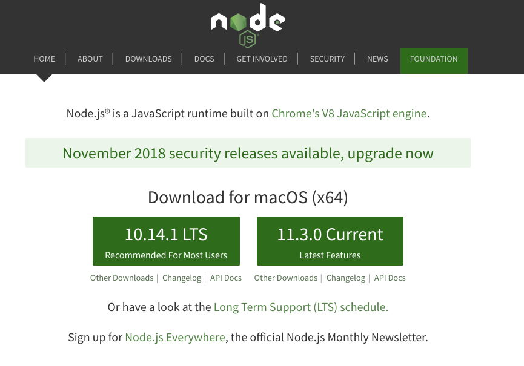
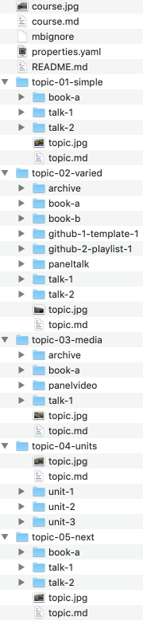

Objectives
Install the tutors command line application and take for a first spin.
Install Procedure
Tutors relies on the following:
Additionally, any programmer style editor:
She following steps will work though these installations...
git
Install git for your platform:
Accept all the default options if they are presented (usually just for Windows).
If the installation succeeded, then verify the version. Do this by opening a shell (command prompt on Windows) and enter the following:
git --versionYou should also set your username + email in git now. These are the identifiers which will be associated with subsequent git commands. These commands are also entered in the shell:
git config --global user.name "John Doe"
git config --global user.email johndoe@example.comnode.js
Install the latest node:
Select LTS version, shown here on the left:

If the installation succeeds, verify the version:
node --versionGit Desktop
If you dont already have a github account, sign up now.
Download and install Git Desktop from this site here:

Install this app now.
Once installed, run the app & log in to your github account:
Initially it may not find any local repos

Sublime
Any plain text editor will do. Sublime is a suitable choice:
Once installed, Sublime should be an app, launch in the usual way:
It is worth using the 'open folder' feature:
This will keep a tree view of your selected folder on a panel on the left. Having this view open can be very useful when authoring content in tutors.
Install Tutors
With git + node installed, we can install tutors with this command:
npm install tutors-ts -gThis should take a minute or two:
npm WARN deprecated postinstall-build@5.0.3: postinstall-build's behavior is now built into npm! You should migrate off of postinstall-build and use the new `prepare` lifecycle script with npm 5.0.0 or greater.
/usr/local/bin/tutors-ts -> /usr/local/lib/node_modules/tutors-ts/tutor-ts.js
> fsevents@1.2.4 install /usr/local/lib/node_modules/tutors-ts/node_modules/fsevents
> node install
[fsevents] Success: "/usr/local/lib/node_modules/tutors-ts/node_modules/fsevents/lib/binding/Release/node-v57-darwin-x64/fse.node" already installed
Pass --update-binary to reinstall or --build-from-source to recompile
> nunjucks@3.1.4 postinstall /usr/local/lib/node_modules/tutors-ts/node_modules/nunjucks
> node postinstall-build.js src
+ tutors-ts@2.5.0
added 719 packages in 28.816sVerify the installation be entering the command:
tutors-ts --versionTutors is hosted on github and the npm registry:
There is an install and simple guide there. This course will cover all that is needed to get going.
Generate a Course
The simplest way to get started with tutors is to use the new command to generate a template course:
tutors-ts --newThis should respond with:
Creating new template course...
Cloning into 'tutors-starter-0'...
Next steps...
cd into tutors-starter-0 and run "tutors" again
This will generate the course web in "tutors-starter/public-site"The command will have generated a new folder: tutors-starter-0, populated with a sample/template course:

Before looking at the structure of the course in detail - lets "build" the course first and look at the output from a student perspective.
Open a shell, and make sure the current directory is tutors-starter-0:
Then enter the tutors-ts command:
tutors-tsThis will respond with:
tutors-ts course web generator: 2.5.0
:: Course Title
--> Simple
:: Simple
--> Lecture 1
--> Lecture 2
--> Lab-01
--> Varied
:: Varied
--> Lecture 3
--> Lecture 4
--> Lab-02
--> Lab-02
--> Resource I
--> Github Repo 1
--> Github Repo 2
--> Media
:: Media
--> Lecture 5
--> Lab-04
--> 12: Deployment
--> Resource I
--> Units
:: Units
--> Unit 1 Title
:: Unit 1 Title
--> Lecture 6
--> Lecture 7
--> Lab-05
--> Unit 2 Title
:: Unit 2 Title
--> Lecture 8
--> Lecture 9
--> Lab-06
--> Unit 3 Title
:: Unit 3 Title
--> Lecture 10
--> Lecture 11
--> Lab-07Tutors has now generated a complete web site from the course materials. This is populated into a public-site-uk folder
Opening public-site-uk/index.html in any browser and we see the students view of the course. It should look like this:

A version is hosted here -
Take some time to visit all of the different resources on the site - including the toolbar along the top. See if you can relate them to the folder/file structure as laid out in tutors-starter-0 folder.
Exercises
Exercise 1: Labs
Open one of the labs:

Experiment with the menu bar along the top. The behaviour of the numbers is clear enough - it moves the student through a particular lesson (like this one). Try left-arrow and right-arrow - they should navigate forward and backward though the steps.
However, the other icons + titles are also navigable. Try them now to see where they lead.
Exercise 2: Editing the Course Sources
Make sure you can open sublime - and have the complete courseweb open in the side panel (use open->folder to do this):

We can make a small change as an initial experiment. Open the properties.yaml file, and replace 'your name' with your own name, and email or whatever in the credits property.
Save the changes, and run the tutors-ts command again. Remember, your tutors-ts command is always run from a shell in the root of the course folder (./tutors-starter-01 in these examples.)
Refresh the browser, and verify that your name has appeared in the header: